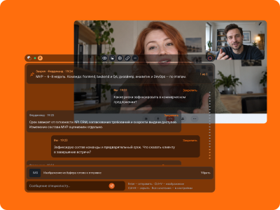
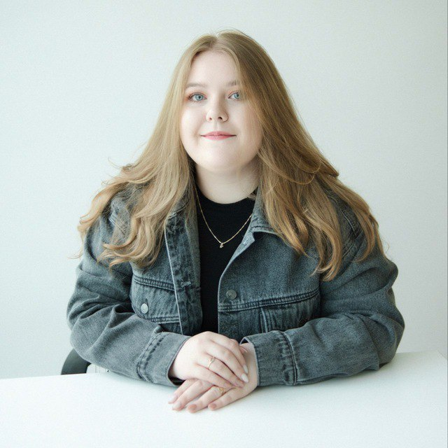
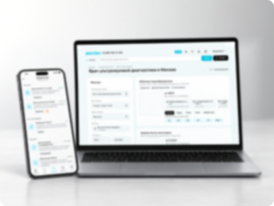
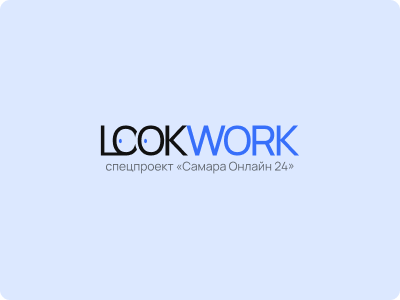

Резюме и портфолио
Екатерина Колесова
UX/UI и веб-дизайнер
Проектирую сайты и интерфейсы. Разрабатываю визуальные
концепции, презентации и digital-коммуникации для брендов.
Сейчас — digital-дизайнер в «Добро»
Агентства · Медиа · Реклама · Ритейл

Портфолио
3 проекта

NDA
UX/UI · Веб-дизайн
Приложение медицинской лаборатории. UX тесты
Кейс доступен на интервью с HR или командой.

Lookwork
UX/UI · Сервис поиска работы
Сервис поиска работы для регионального медиа. Кейс в разработке — скоро опубликую.
CV / Резюме
Скачать резюме PDFОпыт работы
ДоброDigital / Web и UI/UX дизайнерФевраль 2025 — настоящее время
Аутстафф в выделенных клиентских командах. Проекты Сбера, INVITRO, Amway, IQOS, «Парламента», Chester и РАНХиГС; затем постоянная работа с ГК «Самара-Авто».
Мой вклад
- Проектировала сайты, лендинги и интерфейсные разделы. Разрабатывала визуальные концепции, презентации и рекламные материалы.
- Готовила desktop- и mobile-макеты, компоненты и материалы для передачи разработчикам. Адаптировала дизайн под требования разных брендов.
- Для ГК «Самара-Авто» развивала сайты брендов и дилерских центров, создавала промостраницы, digital- и печатные материалы, изображения и видео с AI-инструментами.
- Согласовывала решения с маркетологами, менеджерами и разработчиками.
Результаты
- Подключилась к семи крупным клиентским направлениям; подготовила около 150 интерфейсных экранов и рекламных материалов.
- Библиотека из 35 компонентов и шаблонов сократила время подготовки новых макетов примерно на 30%.
- Для ГК «Самара-Авто» разработала около 26 web-страниц и 75 digital- и печатных материалов для десяти рекламных кампаний.
- Унификация промостраниц и материалов сократила количество повторных правок примерно на 25%.
- AI-инструменты сократили время производства отдельных материалов примерно на 20–30%.
Pro Город — Самара / RNTi media groupMiddle Web Designer / UX/UI DesignerСентябрь 2023 — январь 2025
Региональная медиагруппа. Сайты, промостраницы и спецпроекты для редакционных и коммерческих задач.
Мой вклад
- Прорабатывала информационную архитектуру и User Flow, собирала прототипы, адаптивные UI-макеты и повторно используемые компоненты.
- Разрабатывала айдентику, коммерческие презентации и баннеры с адаптациями под разные носители.
- Координировала дизайн-задачи, согласовывала решения с редакцией, маркетологами и менеджерами; обучала новых сотрудников.
Результаты
- Для сервиса о работодателях региона проработала 7 ключевых сценариев, 40+ экранов и UI Kit из 36 компонентов. К проекту присоединились 20+ крупных брендов, включая Ozon, Авито, ВкусВилл, Магнит и Ленту.
- Для «Счастливого материнства» разработала многостраничный сайт, айдентику и рекламные материалы. Проект объединил 15 медицинских партнёров и получил охват 20 000+ пользователей.
- Компоненты и шаблоны ускорили подготовку типовых материалов примерно на 40%. Одновременно координировала задачи команды до трёх дизайнеров.
Web-перспективаJunior Web / графический дизайнерАвгуст 2021 — декабрь 2022
Студия клиентской web-разработки. B2B- и B2C-сайты на Tilda, 1С-Битрикс и WordPress.
Мой вклад
- Проводила аудит и анализ конкурентов, собирала структуру и пользовательские сценарии, готовила wireframes и адаптивные UI-макеты.
- Передавала материалы разработчикам, участвовала в клиентских презентациях и обсуждении реализации.
Результаты
- Приняла участие примерно в 18 проектах; спроектировала около 12 сайтов и лендингов и 150 ключевых экранов.
- Для «Окей строй» разработала визуальный стиль, около 24 иконок и систему из 100+ web-баннеров для сайта на 1С-Битрикс.
АШАНГрафический дизайнер / декораторСентябрь 2021 — январь 2022
Федеральная розничная сеть. Визуальные материалы для торгового зала, рекламы и печатных носителей в рамках фирменного стиля.
Мой вклад
- Создавала баннеры, афиши, POS-материалы, ценники и наружную рекламу. Адаптировала макеты под разные форматы и выполняла предпечатную подготовку.
Результаты
- За первые три месяца подготовила 150+ макетов для печатных и digital-носителей.
- Чек-лист предпечатной проверки сократил количество возвратов на доработку примерно на 20%.
- Создала единую систему шаблонов для баннеров и других материалов торгового зала.
Обо мне
UX/UI- и веб-дизайнер с опытом в агентствах, медиа, рекламе и ритейле.
Проектирую сайты, веб-сервисы и мобильные интерфейсы: собираю структуру и пользовательские сценарии, создаю прототипы, адаптивные UI-макеты и компоненты, готовлю дизайн к разработке.
Работала с брендингом и digital-коммуникациями, взаимодействовала с разработчиками, маркетологами, редакцией и менеджерами.
Вне работы
Люблю фотографировать, писать маслом пейзажи и открывать новую музыку.
Однажды хочу послушать всю музыку мира и увидеть мир своими глазами, путешествуя по красивым и историческим местам.
01 / 03